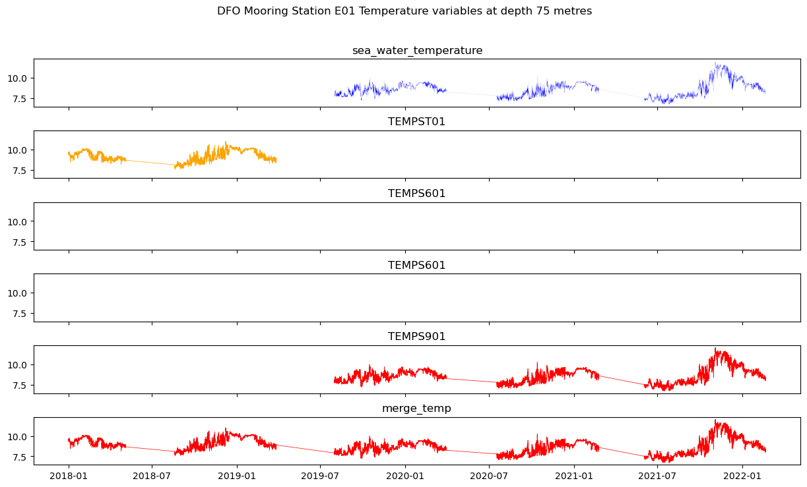

Downloading DFO Historical Mooring Data#
https://data.cioospacific.ca/erddap/tabledap/IOS_CTD_Moorings.htm#
Constraints:#
Limited the search area to the mooring of interest E01. (49.1 - 49.3 & 126 - 126.7)
Limited the time frame to 2018-01-01 to 22-07-21 to minimize download time for this project.
import xarray as xr
# have a look at the dataset:
ds = xr.open_dataset("IOS_CTD_Moorings_9614_794f_0026.nc")
#print(ds)
#print(ds.PSALST01.data)
#print(ds.DOXYZZ01)
#print(ds.DOXMZZ01)
#print(ds.filename.data)
print(ds.variables)
ds
Combine what was learned Below - use a merged Temperature variable for the time series - do not plot Oxygen#
import matplotlib.pyplot as plt
import numpy as np
import pandas as pd
def plot_dfo_mooring(mooring_depth):
df = pd.DataFrame()
df['Salt'] = ds.sea_water_practical_salinity.data
df['Temp1'] = ds.sea_water_temperature.data
df['Temp2'] = ds.TEMPST01.data
# Get a final temp
df['Temp'] = np.where(df['Temp1'].isnull(), df['Temp2'], df['Temp1'])
df['depth'] = ds.depth.data
df['Time'] = ds.time.data
# Need to figure a better way to capture sensor depths - using this from the filename for now
df['filename'] = ds.filename.data
df['file_depth'] = df['filename'].str[-10:-8].astype(int)
df_depth = df[df['file_depth'] == mooring_depth]
x = df_depth.Time
salt = df_depth.Salt
temp = df_depth.Temp
# try to put labels on the blank shared x axis
#tcks = [0, 1, 2, 3, 4, 5, 6, 7, 8, 9]
#tklbls = ["2018-01", "2018-07", "2019-01", "2019-07", "2020-01", "2020-07", "2021-01", "2021-07", "2022-01", "2022-01"]
fig, ax = plt.subplots(2, figsize=(15, 8), sharex=True)
ax[0].plot(x, salt, linewidth=0.05, c='blue')
ax[0].set_title('Salinity')
ax[1].plot(x, temp, linewidth=0.5, c='orange')
ax[1].set_title("Temperature")
fig.subplots_adjust(hspace=0.5)
plt.suptitle("DFO Mooring Station E01 at depth {} metres".format(str(mooring_depth)))
plt.show()
plot_dfo_mooring(75)

Have a look at the various salinity variables.#
import matplotlib.pyplot as plt
import numpy as np
import pandas as pd
def plot_dfo_salt(mooring_depth):
df = pd.DataFrame()
df['sea_water_practical_salinity'] = ds.sea_water_practical_salinity.data
df['PSALST01'] = ds.PSALST01.data
df['PSALST02'] = ds.PSALST02.data
df['SSALST01'] = ds.SSALST01.data
df['Time'] = ds.time.data
# Need to figure a better way to capture sensor depths - using this from the filename for now
df['filename'] = ds.filename.data
df['file_depth'] = df['filename'].str[-10:-8].astype(int)
# isolate the sensor depth
df_depth = df[df['file_depth'] == mooring_depth]
x = df_depth.Time
var1 = df_depth.sea_water_practical_salinity
var2 = df_depth.PSALST01
var3 = df_depth.PSALST02
var4 = df_depth.SSALST01
fig, ax = plt.subplots(4, figsize=(15, 8), sharex=True)
ax[0].plot(x, var1, linewidth=0.05, c='blue')
ax[0].set_title('sea_water_practical_salinity')
ax[1].plot(x, var2, linewidth=0.5, c='orange')
ax[1].set_title("PSALST01")
ax[2].plot(x, var3, linewidth=0.5, c='purple')
ax[2].set_title("PSALST02")
ax[3].plot(x, var3, linewidth=0.5, c='purple')
ax[3].set_title("SSALST01")
fig.subplots_adjust(hspace=0.5)
plt.suptitle("DFO Mooring Station E01 Salinity variables at depth {} metres".format(str(mooring_depth)))
plt.show()
plot_dfo_salt(75)

Have a look at the various temperature variables.#
def plot_dfo_temp(mooring_depth):
df = pd.DataFrame()
df['sea_water_temperature'] = ds.sea_water_temperature.data
df['TEMPST01'] = ds.TEMPST01.data
df['TEMPS601'] = ds.TEMPS601.data
df['TEMPS602'] = ds.TEMPS602.data
#df['TEMPS902'] = ds.TEMPS902.data - ? doesn't exist
df['TEMPS901'] = ds.TEMPS901.data
df['Time'] = ds.time.data
df['filename'] = ds.filename.data
# Need to figure a better way to capture sensor depths - using this from the filename for now
df['file_depth'] = df['filename'].str[-10:-8].astype(int)
df['depth'] = ds.depth.data
# Saw some data gaps - populated the nans with TEMPST01
# Merge the two temp columns
df['merge_temp'] = np.where(df['sea_water_temperature'].isnull(), df['TEMPST01'], df['sea_water_temperature'])
# isolate the sensor depth
df_depth = df[df['file_depth'] == mooring_depth]
# look at the depth range for 75m sensors - can we use this in the erddap option?
# print(df_depth['depth'].max()) # 80.15737
# print(df_depth['depth'].min()) # 68.238
x = df_depth.Time
var1 = df_depth.sea_water_temperature
var2 = df_depth.TEMPST01
var3 = df_depth.TEMPS601
var4 = df_depth.TEMPS602
var5 = df_depth.TEMPS901
var6 = df_depth.merge_temp
fig, ax = plt.subplots(6, figsize=(15, 8), sharex=True, sharey=True)
ax[0].plot(x, var1, linewidth=0.05, c='blue')
ax[0].set_title('sea_water_temperature')
ax[1].plot(x, var2, linewidth=0.5, c='orange')
ax[1].set_title("TEMPST01")
ax[2].plot(x, var3, linewidth=0.5, c='purple')
ax[2].set_title("TEMPS601")
ax[3].plot(x, var4, linewidth=0.5, c='green')
ax[3].set_title("TEMPS601")
ax[4].plot(x, var5, linewidth=0.5, c='red')
ax[4].set_title("TEMPS901")
ax[5].plot(x, var6, linewidth=0.5, c='red')
ax[5].set_title("merge_temp")
fig.subplots_adjust(hspace=0.5)
plt.suptitle("DFO Mooring Station E01 Temperature variables at depth {} metres".format(str(mooring_depth)))
plt.show()
plot_dfo_temp(75)

Have a look at the various oxygen variables.#
# Not seeing any oxy in this time frame at any depth.
def plot_dfo_oxy(mooring_depth):
df = pd.DataFrame()
df['DOXYZZ01'] = ds.DOXYZZ01.data
df['DOXMZZ01'] = ds.DOXMZZ01.data
df['Time'] = ds.time.data
df['filename'] = ds.filename.data
# Need to figure a better way to capture sensor depths - using this from the filename for now
df['file_depth'] = df['filename'].str[-10:-8].astype(int)
df['depth'] = ds.depth.data
# isolate the sensor depth
df_depth = df[df['file_depth'] == mooring_depth]
x = df_depth.Time
var1 = df_depth.DOXYZZ01
var2 = df_depth.DOXMZZ01
fig, ax = plt.subplots(2, figsize=(15, 8), sharex=True, sharey=True)
ax[0].plot(x, var1, linewidth=0.05, c='blue')
ax[0].set_title('DOXYZZ01')
ax[1].plot(x, var2, linewidth=0.5, c='orange')
ax[1].set_title("DOXMZZ01")
fig.subplots_adjust(hspace=0.5)
plt.suptitle("DFO Mooring Station E01 Oxygen variables at depth {} metres".format(str(mooring_depth)))
plt.show()
plot_dfo_oxy(90)